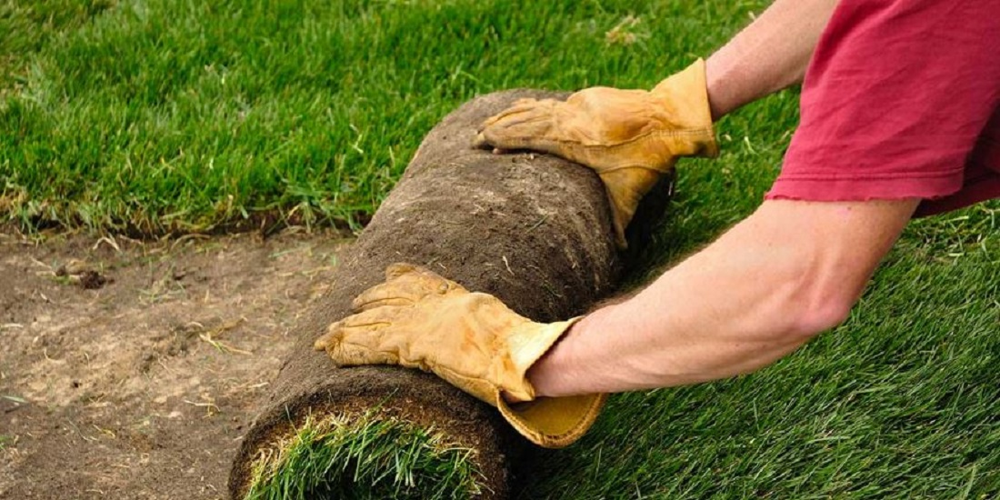

Proper site prep makes all the difference — it lets roots penetrate deeply and evenly, which means a denser, more drought-resistant lawn that naturally crowds out weeds.

New sod should go on bare dirt — nothing growing, nothing dead, no rocks or debris. Add topsoil to fill in low spots and smooth it out; new sod will conform to whatever bumps or humps are underneath.
Start from an outside edge and lay the first strip width-ways against the boundary — you can trim it back later if needed.
Butt the edges tightly between rows — no gaps. It is not necessary to stagger the seams; once the sod roots, the seams won't be noticeable. Avoid denting or squashing new grass if you need to stand on it.
Use a utility knife, sharp shovel, or serrated knife to trim uneven edges — carefully, avoiding walking directly on the new sod.
Apply at least 1 inch of water so the soil beneath the sod is thoroughly wet, ideally 3-4 inches down. To check, gently pull back a corner and push a screwdriver into the soil — it should push in easily with moisture along the first 3-4 inches.
New sod is perishable — the first few weeks of watering are what determine whether your lawn actually takes root.
Day one: Begin watering immediately after installation, enough to penetrate the sod and 3-4 inches of soil. Stay off the new sod until after its first mowing.
The first 1-2 weeks: Keep the sod and soil moist throughout the day — usually 4-6 waterings a day for 10-15 minutes each, until roots establish (typically 7-14 days depending on season). The ground shouldn't be soggy after the first day; if water is still standing a few minutes after watering, you're giving it too much at once. Areas near driveways, sidewalks, and buildings will need more frequent watering since they reflect heat.
First mowing: About 14 days after installation (longer in cooler months). Use your mower's tallest setting, and be careful walking on sod that isn't fully rooted yet.
Weeks 2-4: Gradually reduce watering frequency as weather allows. Check root establishment by pulling up a corner — if you feel resistance, it's time to start watering longer and less often, which helps roots stretch deeper into the soil.
4-6 weeks out: Fertilize to support continued root establishment. Once your lawn is fully rooted, shift to a long-term maintenance routine — mowing, fertilizing, aerating, thatch control, and keeping an eye out for weeds, insects, and disease.
We offer full installation service for residential and commercial properties — done right the first time.